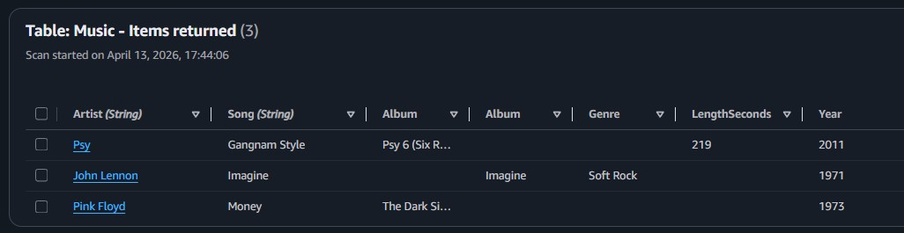
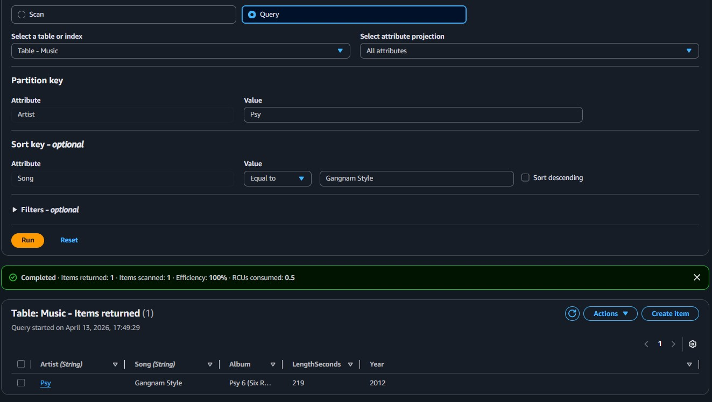
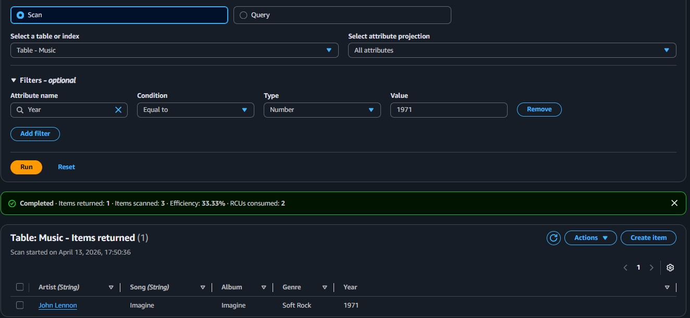
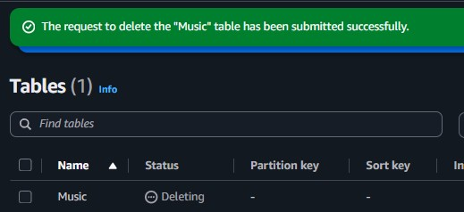

Table Creation
Creating a Music table with Artist (partition key) and Song (sort key) using the DynamoDB console.
Creación de una tabla en DynamoDB, inserción de elementos con esquema flexible, consulta mediante Query y Scan, y eliminación de la tabla.
Created a DynamoDB table named Music with Artist as the partition key and Song as the sort key. Populated the table with three items demonstrating NoSQL schema flexibility, queried data using both indexed lookups and full table scans, and then deleted the table.
Creating a Music table with Artist (partition key) and Song (sort key) using the DynamoDB console.
Adding items with varying attributes to demonstrate NoSQL flexibility.
Retrieving data through indexed queries (fast) versus full table scans (flexible but slower).
Primary services involved in this lab.
Fully managed NoSQL database service with single-digit millisecond latency at any scale.
Detailed documentation of each task performed in the DynamoDB console.
Music.Artist (String), Sort key: Song (String).
Artist="Pink Floyd", Song="Money", Album="The Dark Side of the Moon" (String), Year=1973 (Number).Genre attribute (String) to demonstrate schema flexibility.Artist="Psy", Song="Gangnam Style", added extra LengthSeconds attribute (Number) = 219.
Year attribute from 2011 to 2012.Psy, sort key: Gangnam Style.Year, Type Number, Value 1971.
delete to confirm, and the table was removed.
DynamoDB is a fully managed NoSQL database where schema flexibility allows each item to carry different attributes. The choice between Query and Scan depends on the use case: Query for precise key-based lookups, Scan for broad filtering across the full dataset.